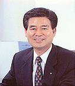

韩国OSG(株)
- Home
- 投资优势
- 外商投资企业的成功事例
- 韩国OSG(株)
韩国OSG(株)
公司介绍
韩国OSG(株)改变了曾经主要以进口为主的刀削工具的局面，实现了国产化的梦想，成为了机械产业领域中的支柱，并在1985年，与全球性的刀削工具公司—日本OSG(株)合资建立公司，作为国内先进的刀削工具综合品牌创建了自己的地位。
由于致力于持续不断的研究投资以及和合作公司的技术交流，成为国内最早被授予“韩国品质大奖”的中小企业。同时，还取得国内外多项产品认证等，确保了世界水准的品质，现在主要面向包括起亚、通用大宇、雷诺三星、WIA、SL、万都等汽车与配件企业，以及三星电子、LG电子等电子领域在内的企业提供产品，对金属型、螺栓.姆螺钉、机场、造船重工业领域的发展也起着重要的作用。同时，还向日本与东南亚、欧洲、美国等工具先进国出口产品，实现了“世界内技术韩国”的梦想。
一般现况
- 投资国/投资企业：日本/OSG(株)
- 成立年度：1976年
- 法人代表：郑台一(社长)
- 员工人数：290名
- 主要产品：螺丝帽、端铣刀、钻床、螺丝板等
- 地址：大邱广域市 达西区 葛山洞 358-48号
发展历史
- 1976年06月：公司成立
- 1981年01月：国内最早开发生产专门制造螺丝用圆形螺丝板
- 1983年06月：国内最早开发生产专门制造螺丝用平螺丝板
- 1985年12月：和日本OSG(株)合资
- 1985年12月：生产不同用途的螺丝帽
- 1986年08月：生产高质量的端铣刀
- 1995年03月：取得JIS品牌标识的认证
- 1995年07月：取得ISO 9001认证
- 1997年01月：取得 ISO 14001 认证
- 1998年07月：批准成立企业附属技术研究所
- 2001年11月：被授予“韩国品质大奖”
- 1997年~2006年：连续10年被评为“优秀品质企业”
竞争力与前景
在无限竞争时代中，为同想确保全球竞争力的客户一起并肩同行，从而把公司的蓝图定为“品质的世界性企业”，并为了实现这一目标，将持续推进TQEM(品质、环境经营)和全面生产维护(TPM)、丰田生产方式(TPS)、精识六标准差(LEAN-6 Sigma)等革新运动，从而确保竞争力。向实现“产品品质、服务品质、人才品质的世界性企业”而努力。